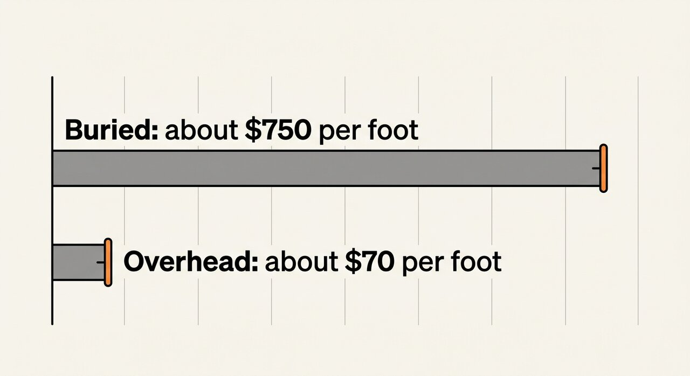

An engineer’s job is to develop solutions to address criteria that are important to customers and other interested parties. An important criterion for energy customers is to prevent a power outage scenario, such as a broken or short circuit. Burying power lines underground is a design solution that can meet this criterion by protecting infrastructure from damage by trees, squirrels, and storms.
El trabajo de un ingeniero es desarrollar soluciones para abordar criterios que son importantes para los clientes y otras partes interesadas. Un criterio importante para los clientes de energía es evitar un escenario de corte de energía, como un circuito roto o corto. Enterrar las líneas eléctricas bajo tierra es una solución de diseño que puede cumplir con este criterio al proteger la infraestructura del daño causado por árboles, ardillas y tormentas.
There are many additional advantages to burying our power grid infrastructure. It would allow the land to be used for other things. It could protect birds, squirrels, snakes, and other animals from injury or death. In addition, people don’t like looking at unattractive power lines. Putting them underground makes a neighborhood more desirable.
Hay muchas ventajas adicionales al enterrar nuestra infraestructura de red eléctrica. Permitiría que la tierra se usara para otras cosas. Podría proteger a pájaros, ardillas, serpientes y otros animales de lesiones o muerte. Además, a la gente no le gusta mirar líneas eléctricas poco atractivas. Ponerlos bajo tierra hace que un vecindario sea más deseable.
But this solution comes with an important constraint. Burying power lines underground is very expensive. Because of this, most power lines in the United States are still aboveground. The cost of burying power lines is roughly $750 per foot. Compare that to the cost of putting up an aboveground power line, at only $70 per foot. An underground line is more than 10 times more expensive!
Pero esta solución viene con una importante limitación. Enterrar las líneas eléctricas bajo tierra es muy costoso. Debido a esto, la mayoría de las líneas eléctricas en los Estados Unidos todavía están en la superficie. El costo de enterrar las líneas eléctricas es de aproximadamente $750 por pie. Compare eso con el costo de instalar una línea eléctrica sobre el suelo, a solo $70 por pie. ¡Una línea de metro es más de 10 veces más cara!

Cost is not the only constraint on underground power lines. They can also be very difficult to maintain. If there is a problem, workers will need to dig up a lot of dirt to find it. And putting infrastructure underground still does not protect it from other hazards like flooding and earthquakes.
El costo no es la única limitación de las líneas eléctricas subterráneas. También pueden ser muy difíciles de mantener. Si hay un problema, los trabajadores tendrán que desenterrar mucha tierra para encontrarlo. Y poner la infraestructura bajo tierra aún no la protege de otros peligros como inundaciones y terremotos.
Putting power lines underground is a design solution that addresses several criteria, including protecting energy infrastructure, protecting wildlife, and making neighborhoods look nicer. But it also comes with some constraints that make it difficult to implement.
Poner líneas eléctricas bajo tierra es una solución de diseño que aborda varios criterios, incluida la protección de la infraestructura energética, la protección de la vida silvestre y la mejora del aspecto de los vecindarios. Pero también viene con algunas limitaciones que dificultan su implementación.